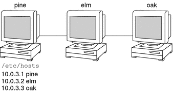
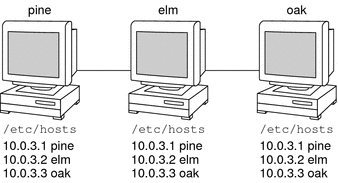
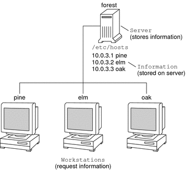
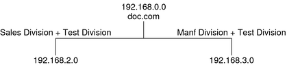
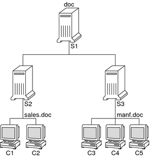

System Administration Guide: Naming and Directory Services (DNS, NIS, and LDAP)
|
|||||||||||||||||
|
Part I About Naming and Directory Services 1. Naming and Directory Services (Overview) Naming Services: A Quick Comparison 2. The Name Service Switch (Overview) Part II DNS Setup and Administration 3. DNS Setup and Administration (Reference) Part III NIS Setup and Administration 4. Network Information Service (NIS) (Overview) 5. Setting Up and Configuring NIS Service Part IV LDAP Naming Services Setup and Administration 8. Introduction to LDAP Naming Services (Overview/Reference) 9. LDAP Basic Components and Concepts (Overview) 10. Planning Requirements for LDAP Naming Services (Tasks) 11. Setting Up Sun Java System Directory Server With LDAP Clients (Tasks) 12. Setting Up LDAP Clients (Tasks) 13. LDAP Troubleshooting (Reference) 14. LDAP General Reference (Reference) 15. Transitioning From NIS to LDAP (Overview/Tasks) 16. Transitioning From NIS+ to LDAP Part V Active Directory Naming Service 17. Setting Up Solaris Active Directory Clients A. Solaris 10 Software Updates to DNS, NIS, and LDAP |
What Is a Naming Service?Naming services store information in a central place, which enables users, machines, and applications to communicate across the network. This information can include the following.
Without a central naming service, each machine would have to maintain its own copy of this information. Naming service information can be stored in files, maps, or database tables. If you centralize all data, administration becomes easier. Naming services are fundamental to any computing network. Among other features, naming service provide functionality that does the following.
A network information service enables machines to be identified by common names instead of numerical addresses. This makes communication simpler because users do not have to remember and try to enter cumbersome numerical addresses like 192.168.0.0. For example, take a network of three machines that are named, pine, elm, and oak. Before pine can send a message to either elm or oak, pine must know their numerical network addresses. For this reason, pine keeps a file, /etc/hosts or /etc/inet/ipnodes, that stores the network address of every machine in the network, including itself. Likewise, in order for elm and oak to communicate with pine or with each other, the machines must keep similar files. In addition to storing addresses, machines store security information, mail data, network services information and so on. As networks offer more services, the list stored of information grows. As a result, each machine might need to keep an entire set of files which are similar to /etc/hosts or /etc/inet/ipnodes. A network information service stores network information on a server, which can be queried by any machine. The machines are known as clients of the server. The following figure illustrates the client-server arrangement. Whenever information about the network changes, instead of updating each client's local file, an administrator updates only the information stored by the network information service. Doing so reduces errors, inconsistencies between clients, and the sheer size of the task. This arrangement, of a server providing centralized services to clients across a network, is known as client-server computing. Although the main purpose of a network information service is to centralize information, the network information service can also simplify network names. For example, assume your company has set up a network which is connected to the Internet. The Internet has assigned your network the network number 192.168.0.0 and the domain name doc.com. Your company has two divisions, Sales and Manufacturing (Manf), so its network is divided into a main net and one subnet for each division. Each net has its own address.  Each division could be identified by its network address, as shown above, but descriptive names made possible by naming services would be preferable.  Instead of addressing mail or other network communications to 198.168.0.0, mail could be addressed to doc. Instead of addressing mail to 192.168.2.0 or 192.168.3.0, mail could be addressed to sales.doc or manf.doc. Names are also more flexible than physical addresses. Physical networks tend to remain stable, but company organization tends to change. For example, assume that the doc.com network is supported by three servers, S1, S2, and S3. Assume that two of those servers, S1 and S3, support clients.  Clients C1, C2, and C3 would obtain their network information from server S1. Clients C4, C5, and C6 would obtain information from server S3. The resulting network is summarized in the following table. The table is a generalized representation of that network but does not resemble an actual network information map. Table 1-1 Representation of docs.com network
Now, assume that you create a third division, Testing, which borrowed some resources from the other two divisions, but did not create a third subnet. The physical network would then no longer parallel the corporate structure. Traffic for the Test Division would not have its own subnet, but would instead be split between 192.168.2.0 and 192.168.3.0. However, with a network information service, the Test Division traffic could have its own dedicated network.  Thus, when an organization changes, its network information service can change its mapping as shown here. Now, clients C1 and C2 would obtain their information from server S2. C3, C4 and C5 would obtain information from server S3. Subsequent changes in your organization would be accommodated by changes to the network information structure without reorganizing the network structure. |
||||||||||||||||
|